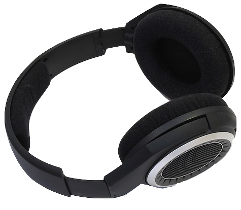

Asmr
« Deeply, softly, like a mellow organ, but with a roughness in her voice like a grasshopper's, which rasped his spine deliciously and sent running up into his brain waves of sound »
- Virginia Woolf - 
Il termine "Autonomous sensory meridian response" (ASMR) è un neologismo per indicare una piacevole sensazione di formicolio al cuoio capelluto, lungo la schiena o sulle spalle, di solito accompagnato da uno stato di completo rilassamento mentale da parte di chi lo sperimenta. Tale sensazione può essere suscitata da diversi stimoli come quelli visivi, uditivi o tattili, percepibili da un soggetto.
Questa correlazione tra stimoli e rilassamento non è stata ancora scientificamente provata nonostante molte persone pratichino l'ASMR quotidianamente e inconsciamente: ad esempio, se ci pensiamo ci rendiamo conto che quando osserviamo la gestualità di un individuo e i suoi movimenti nello spazio tendiamo a provare piacevoli sensazioni.
Gli inneschi che fanno scaturire il rilassamento si chiamano tingles, i quali possono essere uditivi e/o visuali. A sua volta, i suoni che producono i tingles prendono il nome di triggers.
Come è nato?
Quali sono i benefici?
Come si è diffuso?
Clicca sulle domande più frequenti e potrai vedere le risposte che desideravi
Secondo un articolo pubblicato sul sito Know Your Meme, il termine fu usato la prima volta nel 2010 nel gruppo Facebook Autonomous Sensory Meridian Response Group fondato da Jennifer Allen. Inizialmente vennero a crearsi blog e siti web in cui si condividevano esperienze e si riunivano le persone che avevano sperimentato questa sensazione piacevole dovuta a gesti e a suoni quotidiani. Jennifer decise allora di chiamare il fenomeno ASMR, dove "autonoma" si riferisce alle risposte fisiologiche involontarie create dai triggers e "meridian" indica uno dei percorsi lungo i quali scorre l'energia vitale del corpo secondo la teoria dell’agopuntura.
L'esperienza dell'ASMR sembra che promuova il rilassamento e la riduzione dello stress. Infatti, molti dei triggers più comuni, inclusi la respirazione profonda e l'ascolto di suoni melodici e tranquilli, sono simili alle tecniche calmanti spesso utilizzate per rassicurare neonati e bambini piccoli. Allo stesso modo i rumori ripetitivi, delicati, simili a quelli di sottofondo, suoni nitidi, si sono dimostrati simili a quelli usati nelle macchine del sonno destinate ad aiutare le persone a concentrarsi o ad addormentarsi.
Il mezzo con il quale si è diffuso l'ASMR è la rete internet: con Youtube,
infatti, moltissime persone si sono messe in gioco in questo campo di intrattenimento producendo
e pubblicando video e/o audio ASMR usufruibili per chiunque necessiti di rilassarsi. Tali
performers, streamers o artisti, si riprendono mentre riproducono determinati suoni i quali
vengono registrati da specifici microfoni.
Un'altra piattaforma dove sta prendendo piede
questa pratica è Twitch.